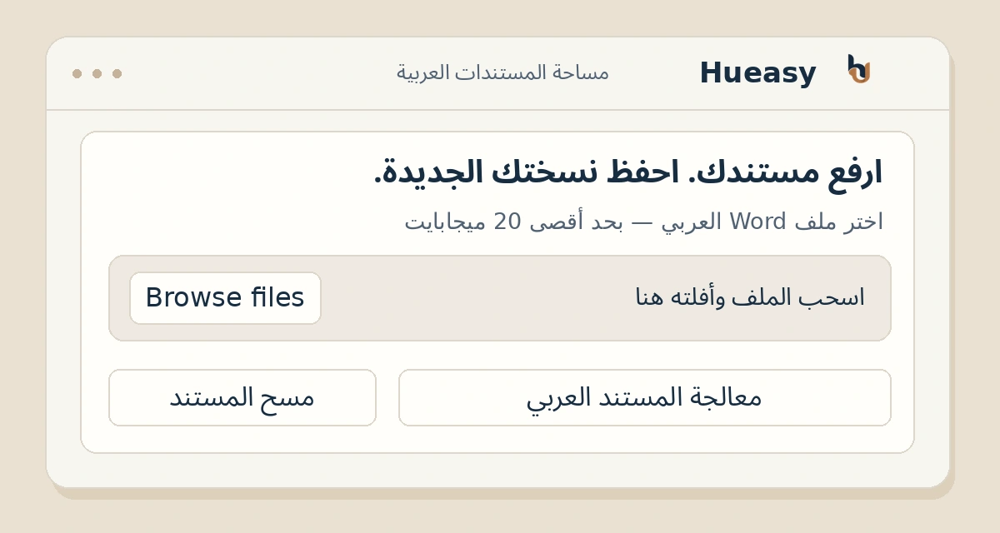
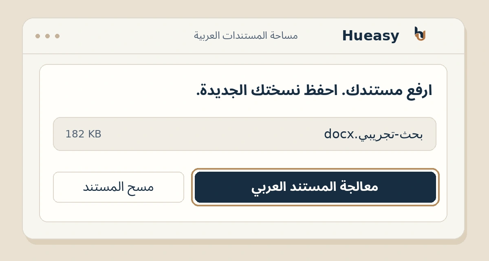
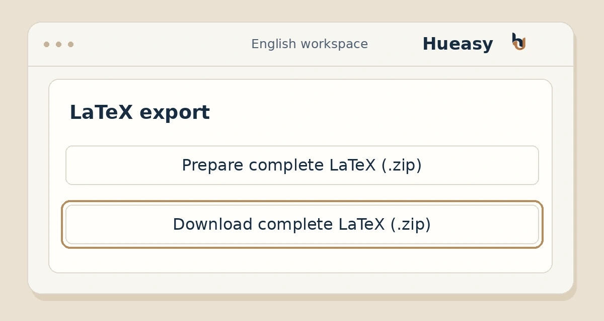

تكبير المعاينةارفع مستندك
اختر ملف Word (.docx) من جهازك. الحد الأقصى للملف 20 ميجابايت.
ارفع مستندك إلى Hueasy لتحصل على نسخة معاد صياغتها، جاهزة للتنزيل والمراجعة في Word. من اختيار الملف إلى تنزيل النتيجة، كل الخطوات في مساحة عمل واحدة.
 تكبير المعاينة
تكبير المعاينةافتح Hueasy وأدخل كود الوصول، ثم اختر مساحة العمل المناسبة للغة مستندك.

تكبير المعاينةاختر ملف Word (.docx) من جهازك. الحد الأقصى للملف 20 ميجابايت.

تكبير المعاينةبعد ظهور اسم الملف، اضغط «معالجة المستند العربي» أو Process Word file في مساحة الإنجليزية والتركية وانتظر حتى تجهز النسخة الجديدة.
 تكبير المعاينة
تكبير المعاينةاضغط «تنزيل المستند العربي» أو Download processed Word file، ثم افتحه وراجع الصياغة قبل مشاركته أو اعتماده.
إعادة الصياغة تساعدك على جعل الجملة أكثر مباشرة وأسهل قراءة، مع الحفاظ على معناها.
من الجدير بالذكر أن وضوح الأسلوب يسهم بصورة ملحوظة في تسهيل عملية استيعاب القارئ للمحتوى.
يساعد الأسلوب الواضح القارئ على فهم المحتوى بسهولة أكبر.
ارفع مستند Word عربيًا في المساحة المخصصة للعربية. تُفعّل الخدمة على كود اشتراكك بعد التأكيد.
ارفع مستند Word أو الصق النص عند توفر خيار اللصق. اختر الإنجليزية يدويًا أو استخدم التعرّف التلقائي.
ارفع مستند Word أو الصق النص عند توفر خيار اللصق. اختر التركية يدويًا أو استخدم التعرّف التلقائي في المساحة المشتركة مع الإنجليزية.
ارفع مستند Word واضغط زر المعالجة. يتولى Hueasy إعادة الصياغة تلقائيًا، وعند اكتمالها يظهر زر التنزيل لتستلم نسختك الجديدة بصيغة Word بضغطة واحدة.
يدعم ملفات .docx بحجم يصل إلى 20 ميجابايت.
عند توفر المقارنة، اعرض الفقرة الأصلية إلى جانب الفقرة المعاد صياغتها داخل البرنامج، أو نزّل تقرير المقارنة بصيغة HTML.
عند إتاحة اللصق في مساحة الإنجليزية والتركية، ألصق نصًا يصل إلى 100 ألف حرف، ثم انسخ النتيجة أو نزّلها كنص عادي أو HTML منسّق. ويمكن تنزيلها في قالب Word عند توفره.
بعد معالجة مستند في مساحة الإنجليزية والتركية، يمكنك نسخ نص النتيجة من الواجهة إلى جانب تنزيل ملف Word.
تتوفر مدد اشتراك شهر وثلاثة أشهر وستة أشهر. الإنجليزية والتركية تشتركان في كود واحد، ويمكن طلب تفعيل العربية على الكود نفسه.
عند توفر كود تجربة، يمكنك معالجة مستند Word واحد بالإنجليزية أو العربية، بحد أقصى 1000 كلمة. يُحتسب الاستخدام بعد نجاح المعالجة.
يعيد Hueasy صياغة المستند ويساعدك على مراجعة الفقرات. إذا كانت مؤسستك تعتمد Turnitin، فارجع إلى تقرير الكتابة بالذكاء الاصطناعي وتقرير التشابه الصادرين عن المؤسسة، بحسب ما تتيحه لمعرفة نتيجة النسخة المقدّمة وفق سياستها.
قارن الفقرات بالنسخة الأصلية، وتأكد من بقاء المعنى ومن توثيق الأفكار والاقتباسات والمراجع حتى بعد إعادة الصياغة.
نزّل نسخة Word النهائية، ثم قدّمها عبر مسار Turnitin الذي تحدده جامعتك أو الجهة المشرفة للاطلاع على التقارير التي تتيحها مؤسستك.
بعد تجهيز نسخة Word في مساحة الإنجليزية، اضغط Prepare complete LaTeX (.zip)، ثم Download complete LaTeX (.zip) عند اكتمال التجهيز.
فك ضغط الحزمة وافتح main.tex، مع إبقاء مجلدات الصور والخطوط المرفقة بجانبه. تدعم الحزمة عناصر مثل الجداول والمعادلات والروابط والحواشي والصور المتوافقة. راجع توزيع الصفحات بعد فتح المشروع.

تكبير المعاينةاختر مستند Word بامتداد .docx وبحجم لا يزيد عن 20 ميجابايت. إذا كان مستندك بامتداد .doc، احفظ نسخة منه بصيغة .docx أولًا.
يظهر زر تنزيل ملف Word في مساحة العمل عند اكتمال المعالجة. يظل الملف الأصلي على جهازك، وتُنزل النتيجة كنسخة مستقلة.
تواصل مع فريق Hueasy واطلب تفعيل مساحة العربية على كود اشتراكك الحالي.
يظهر خيار تجهيز الحزمة في مساحة الإنجليزية. في مساحة العربية يمكنك تنزيل المستند المعاد صياغته بصيغة Word.
ارجع إلى الحد وطريقة احتساب النسبة لدى مؤسستك، فقد تختلف المعايير بين المقررات والناشرين. تُراجع المواضع المطابقة والاستشهادات إلى جانب الرقم الإجمالي.
يقيس تقرير التشابه التطابق مع المصادر. مؤشر الكتابة بالذكاء الاصطناعي، عند إتاحته، يظهر بصورة منفصلة وتفسّره المؤسسة وفق سياستها.
راسل فريق Hueasy لطلب الكود ومعرفة خيارات الاشتراك.
تواصل مع فريق Hueasy لطلب كود الوصول أو للاستفسار عن الاشتراك.